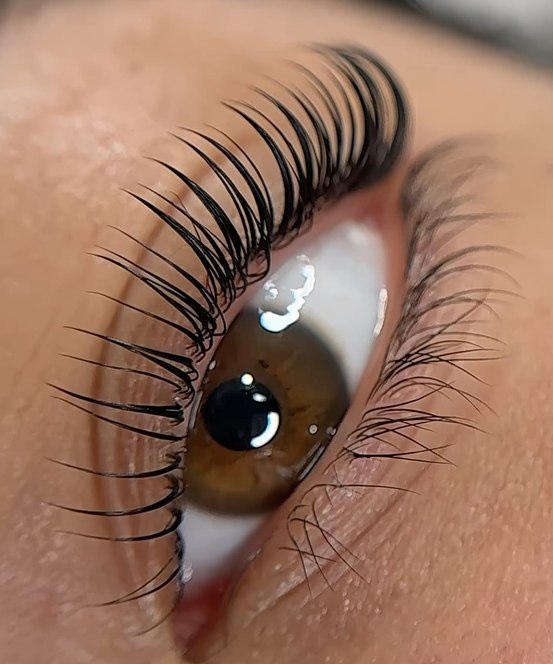

Caso real · Lifting coreano · Granollers
Lifting coreano y tinte de pestañas en Granollers
Elevamos y curvamos tu pestaña natural con un diseño adaptado a su longitud y dirección. El protocolo puede completarse con tinte vegano para conseguir una mirada más abierta y definida sin añadir extensiones.

Una mirada más abierta trabajando tu pestaña natural.
No existe una curvatura adecuada para todo el mundo. Antes de empezar observamos cómo nace la pestaña, su longitud y su resistencia, además del resultado que quieres conseguir. Así evitamos aplicar un diseño estándar que no respete tu ojo.
El lifting modifica temporalmente la forma visible de la pestaña natural. No crea longitud ni densidad nuevas; hace más visible la pestaña que ya tienes. El tinte vegano puede aportar mayor definición, especialmente cuando las puntas son claras.
Curvatura y definición
Lifting de pestañas con tinte en Granollers
El lifting trabaja la elevación y la curvatura de tu pestaña natural. El tinte puede completar el resultado haciendo más visibles las puntas claras y aportando una definición temporal, sin añadir extensiones.
La combinación se decide después de revisar longitud, dirección, resistencia y tratamientos recientes. “Korean Lash Lift” o lifting coreano son términos utilizados para buscar este tipo de protocolo; en Nohuska adaptamos el diseño al estado real de cada pestaña.
Caso propio y autorizado
Resultado real de lifting coreano con tinte.
Qué observamos antes
- Longitud y dirección de crecimiento.
- Estado y resistencia de la pestaña.
- Tratamientos recientes o extensiones.
- Efecto deseado: natural o más definido.
Cada pestaña responde de forma diferente. La fotografía muestra un caso real y no garantiza un resultado idéntico.
Lifting coreano, extensiones o Korean Gaze.
| Opción | Qué trabaja | Para qué puede encajar | Mantenimiento |
|---|---|---|---|
| Lifting coreano + tinte | Tu pestaña natural | Curvatura, apertura visual y definición | Evoluciona con el ciclo del pelo; sin rellenos |
| Extensiones | Añade fibras seleccionadas | Modificar longitud, dirección o densidad | Necesita limpieza y rellenos periódicos |
| Nohuska Korean Gaze™ | Cejas y pestañas naturales | Natural Brow™, lifting coreano y tinte vegano en un protocolo | Cuidados indicados para ambas zonas |
Cómo es la cita de lifting de pestañas.
Antes de venir
Prepara tus pestañas para la valoración.
- Acude sin máscara ni maquillaje de ojos.
- Avísanos si llevas extensiones o quedan restos de adhesivo.
- Comenta tratamientos recientes en pestañas.
- Informa de sensibilidad, irritación o molestias antes de la cita.
Después del lifting
Sigue las indicaciones que te entreguemos sobre agua, maquillaje, limpieza y productos compatibles. No todas las pestañas necesitan el mismo intervalo antes de repetir el servicio.
Si tienes una duda durante la evolución, envíanos una fotografía y te orientaremos.
Consultar mi casoServicio local · cita previa
Lifting de pestañas cerca de ti en Granollers.
Realizamos el servicio en Nohuska Beauty Lab, Avinguda Sant Esteve, 40, 08402 Granollers. Atendemos con cita previa de lunes a sábado, de 10:00 a 20:00, y recibimos también a clientas de Canovelles, Les Franqueses, La Roca, Cardedeu, La Garriga y otras localidades del Vallès Oriental.
Puedes solicitar una valoración gratuita por WhatsApp o llamar al 624 011 715. Si vienes desde otra localidad, consulta antes las recomendaciones y el tiempo previsto para tu cita.

Valoración personalizada en Nohuska
Valentina revisa la mirada y el estado de la pestaña antes de recomendar lifting, extensiones o el protocolo Korean Gaze.
Preguntas frecuentes sobre lifting de pestañas
¿Qué incluye el lifting coreano en Nohuska?
Incluye la valoración, el diseño de la curvatura, el lifting coreano y el tinte vegano cuando el estado de la pestaña permite realizar el protocolo.
¿Qué diferencia hay entre lifting y extensiones?
El lifting eleva y curva tu propia pestaña sin añadir fibras. Las extensiones permiten modificar longitud o densidad y necesitan rellenos periódicos.
¿Cuánto dura el resultado?
Evoluciona con el ciclo natural de cada pestaña. La duración visible depende del crecimiento, los hábitos y los cuidados; te orientaremos de forma personalizada.
¿Puedo maquillar las pestañas después?
Te indicaremos cuándo retomar maquillaje, agua y productos habituales según el protocolo realizado. Sigue esas pautas para no alterar el resultado inicial.
¿Cómo debo acudir a la cita?
Sin maquillaje de ojos. Comenta si llevas extensiones, has realizado otro tratamiento recientemente o notas sensibilidad o molestias en la zona.
¿Qué incluye Nohuska Korean Gaze™?
Combina Nohuska Natural Brow™, lifting coreano y tinte vegano para diseñar cejas y pestañas como un conjunto.
¿Cuánto cuesta el lifting con tinte?
El presupuesto se confirma según el protocolo recomendado y si incluye tinte. La valoración es gratuita y permite revisar antes el estado de la pestaña natural.
¿Dónde hacéis lifting de pestañas en Granollers?
En Nohuska Beauty Lab, Avinguda Sant Esteve, 40, 08402 Granollers, con cita previa.
Completa tu diseño de mirada
Consulta tu próxima cita de lifting.
Indícanos qué días te van bien y si quieres añadir tinte vegano.